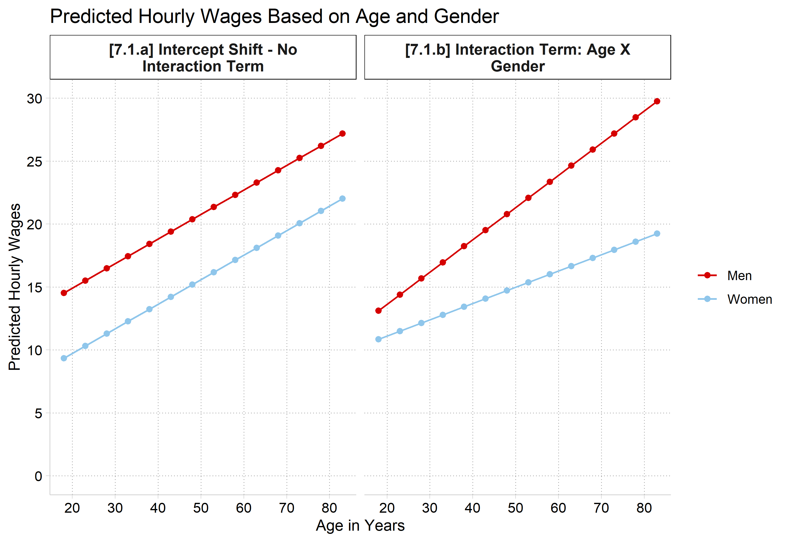

library(haven) # import Stata data and labels
library(dplyr) # data manipulation
library(ggplot2) # graphs
library(marginaleffects) # predictions and marginal effects
library(cleanplots) # graph scheme
cleanplots_defaults()
gss <- read_dta("https://tdmize.github.io/data/data/cda_gss.dta")
# Keep model variables for the employed; drop any missing data
emp <- gss |>
filter(employed == 1) |>
select(wages, woman, age, college, race3, married, parent)
emp <- emp[complete.cases(emp), ] |>
mutate(across(c(woman, college, race3, married, parent), as_factor))
# 7.1.a & 7.1.b - linear model interaction ex: continuous X binary
noint <- lm(wages ~ woman + age + college + race3 + married + parent, data = emp)
intterm <- lm(wages ~ woman * age + college + race3 + married + parent, data = emp)
grid <- datagrid(model = noint, age = seq(18, 83, 5), woman = unique,
grid_type = "counterfactual")
pr <- bind_rows(
"[7.1.a] Intercept Shift - No Interaction Term" =
avg_predictions(noint, by = c("age", "woman"), newdata = grid),
"[7.1.b] Interaction Term: Age X Gender" =
avg_predictions(intterm, by = c("age", "woman"), newdata = grid),
.id = "model")
ggplot(pr, aes(x = age, y = estimate, color = woman)) +
geom_line() +
geom_point() +
facet_wrap(~ model, labeller = label_wrap_gen(35)) +
scale_x_continuous(breaks = seq(20, 80, 10)) +
scale_y_continuous(breaks = seq(0, 30, 5), limits = c(0, 30)) +
labs(title = "Predicted Hourly Wages Based on Age and Gender",
x = "Age in Years", y = "Predicted Hourly Wages", color = NULL)
![[7.1.n] Four bar charts for groups A and B with and without evidence. Top row: log-odds of -1.50 and 1.00 for group A and 0.50 and 3.00 for group B, the same +2.5 change for both groups (no interaction in log-odds), but the probabilities are 0.18 and 0.73 for A and 0.62 and 0.95 for B, changes of .55 and .33 (an interaction in probability). Bottom row: log-odds of -1.39 and 0.41 for A and 0.20 and 2.94 for B (an interaction in log-odds), but probabilities of 0.20 and 0.60 for A and 0.55 and 0.95 for B, the same +.40 change for both groups (no interaction in probability).](fig/cda-07_01_n-odds_vs_probs.png)
![[7.1.n] Four bar charts for groups A and B with and without evidence. Top row: log-odds of -1.50 and 1.00 for group A and 0.50 and 3.00 for group B, the same +2.5 change for both groups (no interaction in log-odds), but the probabilities are 0.18 and 0.73 for A and 0.62 and 0.95 for B, changes of .55 and .33 (an interaction in probability). Bottom row: log-odds of -1.39 and 0.41 for A and 0.20 and 2.94 for B (an interaction in log-odds), but probabilities of 0.20 and 0.60 for A and 0.55 and 0.95 for B, the same +.40 change for both groups (no interaction in probability).](7-1-interaction-effects_files/figure-html/unnamed-chunk-11-1.png)